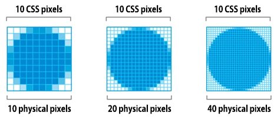
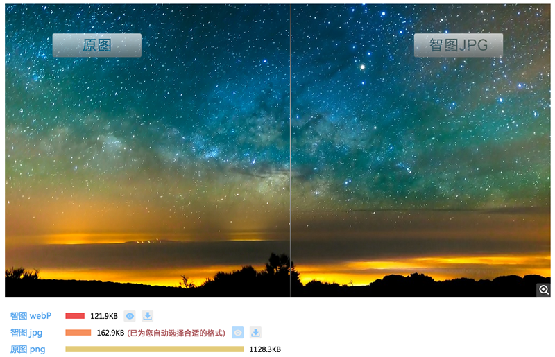
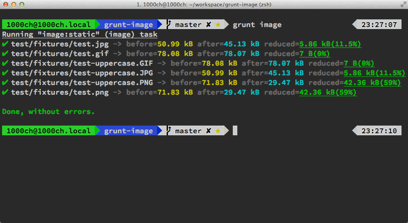

HTTP Archieveある統計によると、画像コンテンツはすでにインターネットコンテンツ全体の62%を占めており、つまり半分以上のトラフィックと時間が画像のダウンロードに使われているということです。パフォーマンス最適化の観点から見ても、画像は間違いなく最適化のホットスポットかつ重点の一つであり、Google PageSpeedやYahooの14のパフォーマンス最適化ルールのいずれもが画像最適化を重要な最適化手段としています。本記事では、基本的な画像フォーマットの選択から、まだ広くサポートされていないレスポンシブ画像まで、Web画像最適化のあらゆる側面をカバーしています。
Google Web Fundamentalsの言葉が私はとても好きです：
画像最適化は芸術であると同時に科学でもあります。画像最適化が芸術であるのは、個々の画像の圧縮には絶対的な最善の特定ソリューションが存在しないためであり、画像最適化が科学であるのは、数多くの優れた方法やアルゴリズムが画像サイズを大幅に削減できるためです。画像の最適な設定を見つけるには、フォーマットの能力、エンコードされるデータ内容、ピクセル寸法など、多くの次元に沿って慎重に分析する必要があります。
本当に画像を使う必要があるのか？
必要な効果を実現するために、本当に画像が必要なのか？これはまず自分に問いかけるべき問題です。ブラウザとWeb標準の発展速度は非常に速く、数年前に私がMicrosoft Silverlight 1.0でビデオプレーヤーを書いていたとき、中国語はカスタムフォントで表示できなかったため、当時は必要な文字をサーバー上で画像として生成しキャッシュするという、多くのひどいコードを書いていました。ユーザーにとってダウンロードは非常に遅く、検索エンジンもこれらの文字をまったく検索できませんでした。
しかし現在は状況が異なります。多くの特殊効果（グラデーション、シャドウ、角丸など）は純粋なHTML、CSS、SVGなどで実現でき、これらの効果を実現するには、少なければわずか数行のコード、多ければ追加のライブラリを読み込むだけで済みます（普通の写真は非常に強力なエフェクトライブラリよりもはるかに大きいのです）。これらの効果は必要なスペースが非常に小さいだけでなく、マルチデバイス・マルチ解像度でも良好に動作し、低機能なブラウザでも適切に機能をフォールバックできます。したがって、代替技術が存在する場合は、まずこれらの技術を選択すべきであり、どうしても画像を使用せざるを得ない場合にのみ、実際の画像を追加すべきです。
代替技術
- CSSエフェクト、CSSアニメーション。解像度に依存しない効果を提供し、あらゆる解像度やズームレベルで非常に鮮明に表示でき、必要なスペースも非常に小さくなります。
- Webフォント。現在では多くのアイコンライブラリでさえフォント方式で提供されており、文字の検索可能性を維持しつつ表示スタイルを拡張できます。
フロントエンドエンジニアはデザイナーやプロダクトマネージャーとコミュニケーションを取り続けるのが理想的であり、彼らにどのような効果が「シンプルで、効率的で、保守しやすい」かを理解してもらうためです。そもそもCSSであれば角丸矩形のRadiusを変更するとリアルタイムで効果を確認できますが、画像を使用する場合は少なくとも画像の再生成、切り出し、リソースの差し替えが必要です。Retina、高解像度スクリーン、多様なサイズのデバイスは、これらすべてが非画像の特殊効果の発展を加速させました。高解像度スクリーンでのWindows 7の惨憺たる様子を考えれば、ネイティブの画像リソースが多ければ多いほど良いというわけではないことが分かります。
画像フォーマットの選択
効果を表現するために本当に画像が必要なら、画像フォーマットの選択が最適化の第一歩です。よく耳にする言葉には、ベクター画像、ラスター画像、SVG、非可逆圧縮、可逆圧縮などがあります。まず各種画像フォーマットの特徴を説明します。
| 画像フォーマット | 圧縮方式 | 透明度 | アニメーション | ブラウザ互換性 | 適用シナリオ |
|---|---|---|---|---|---|
| JPEG | 非可逆圧縮 | 非対応 | 非対応 | 全て | 複雑な色や形状、特に写真 |
| GIF | 可逆圧縮 | 対応 | 対応 | 全て | シンプルな色、アニメーション |
| PNG | 可逆圧縮 | 対応 | 非対応 | 全て | 透明が必要な場合 |
| APNG | 可逆圧縮 | 対応 | 対応 | Firefox Safari iOS Safari | 半透明効果が必要なアニメーション |
| WebP | 非可逆圧縮 | 対応 | 対応 | Chrome Opera Android Chrome Android Browser | 複雑な色や形状 ブラウザプラットフォームが予測可能な場合 |
| SVG | 可逆圧縮 | 対応 | 対応 | 全て（IE8以上） | シンプルな図形、良好な拡大縮小体験が必要な場合 画像の特殊効果を動的に制御する必要がある場合 |
このうちAPNGとWebP形式は登場が遅く、まだWeb標準に採用されておらず、特定のプラットフォームやブラウザ環境が予測できる場合にのみ採用されます。どちらも非対応環境で適切に機能をフォールバックできますが、本節ではこの2つの形式については取り上げません。画像フォーマットの選択プロセスは以下の通りです：

色の豊富な写真には、JPGが汎用的な選択肢です
- 人間の目の構造はJPG圧縮後の写真の閲覧に適しており、細部を十分に無視して脳内で補完できます
- JPGは圧縮率が高くない場合、保持される細部は良好です
- WebPはJPGと比較して容量を30%削減できますが、現時点では互換性が比較的低いです
より汎用的なアニメーションが必要な場合、GIFが唯一利用可能な選択肢です
- GIFが対応する色の範囲は256色で、完全透明/完全不透明のみをサポートします
- GIFは色の豊富なアニメーションを表示する際に、色不足やエッジのジャギーなどの問題が発生する可能性があります
画像が標準的な幾何学図形で構成されている場合、またはプログラムで表示効果を動的に制御する必要がある場合は、SVG形式を検討できます
- SVGはXMLを使用して定義されるベクターグラフィックであり、生成された画像はさまざまな解像度で自由に拡大縮小できます
- SVGではJavaScriptなどのインターフェースを通じて画像の特殊効果を自由に変更でき、一部の要素の自由な回転、移動、色の変更などを行うことができます
色の豊富な画像を鮮明に表示する必要がある場合、PNGが適しています
- PNG-8は256色を表示できますが、同時に256段階の透明度をサポートできるため、色数は少ないが半透明が必要なシチュエーション（WeChatのアニメーション大スタンプなど）ではPNG-8を検討できます
- PNG-24はトゥルーカラーを表示できますが、透明度はサポートしていません。色の豊富な画像（スクリーンショット、UIデザイン図など）での使用をお勧めします
- PNG-32はトゥルーカラーを表示でき、同時に256段階の透明度をサポートし、効果は最も良いもののサイズも最大です
画像サイズの選択
サイズは、かつて最も議論の必要がないテーマでしたが、Retinaが登場して以来、世界はずっと複雑になりました。モバイルデバイスにおけるピクセルとサイズについて詳しく説明すると論文1本分になるため、詳しく知りたい方は以下の記事を参考にすることをお勧めします：
ここでは関心のある部分と結論だけを述べます。私たちは異なるタイプのピクセルを区別する必要があります：CSSピクセルとデバイスピクセルです。1つのCSSピクセルには複数のデバイスピクセルが含まれる場合があります。画像に関しては、高DPIのスクリーンではより高解像度の画像が必要です。Retinaについて議論する場合、2倍の解像度（ほぼ4倍のサイズ）の画像が必要になります。これは近道の余地がほとんどなく、スクリーンがその大きさであれば、必要な画像もその大きさなのです。（ハトはなぜそんなに大きいのか？^_^）

私たちが制御できるのは、「ちょうど」必要なサイズで画像を表示することです。例えば、画面内でCSSまたはタグのwidth/height属性を使用して、200x200の画像を100x100のサイズに調整した場合、(200x200)-(100x100)=30000ピクセルが無駄になり、これは画像サイズの75%を占めます！
これだけ大きな無駄が生じるのは、画像のサイズが面積にほぼ比例し、幅と高さの平方に比例するためです。したがって、クライアントが実際に表示する画像サイズを適切に計算することで、画像のサイズを大幅に削減できます。縦と横がそれぞれわずか10px無駄になるだけであっても、画像が十分に大きい場合は、この部分が大きな影響を及ぼします。
レスポンシブ画像
上記で「ちょうど」クライアントが必要とするサイズの画像を表示すると述べましたが、聞こえは簡単ですよね？しかし、レスポンシブレイアウトが登場すると、これは極めて困難になります。幅1920から幅320までの無数のデバイスをサポートする必要があります。幅1920の画像を使用すると、小型デバイス（このようなデバイスは通常、回線速度や通信量により敏感です）上の各ユーザーが余分な帯域と待ち時間を負担することになります。幅320の画像を使用すると、1920のスクリーンでは、高解像度スクリーンでDOSを使用するかのように受け入れがたいものになります。
ごく自然に、画像も「レスポンシブ」に読み込まれ、デバイスに応じて異なるサイズの画像が読み込まれる必要があります。レスポンシブ画像はまだWeb標準に盛り込まれておらず、実装にも多くの不便さや互換性の制約があります。百度EFEチームの以下の記事を参考にすることをお勧めします：
レスポンシブ画像はまだ標準になっていませんが、これはWeb画像最適化における強力な武器であり、一旦広くサポートされれば、画像サイズを縮小すること以上に効果的な最適化方法はありません。JPGとPNGの最適化
正しい画像フォーマットを選択し、正しいサイズで画像を生成した後、さらに画像を最適化する必要があります。この最適化は通常、2つのステップで行われます：
- 不可逆最適化では、出現しない、またはほとんど出現しない色を削除し、隣接する類似色を結合します。このステップは必須ではなく、例えばPNG形式ではそのまま次のステップに進みます。
- 可逆最適化では、データを圧縮し、不要な情報を削除します。
JPGおよびPNG形式の画像を生成した後も、通常さらに最適化の余地があります。例えば、JPG形式の写真にはカメラのExif情報が含まれている場合があり、PNG形式の画像にはFireworksなどのソフトウェアのレイヤー情報が含まれている場合があります。これらの余分な情報を除去した後、画像のパレットを縮小し、出現しない色を除去し、隣接する同じ色を結合するなどの手段で最適化することもできます。原理的な内容についてはここでは詳しく説明しませんが、実務で使用できる最適化ツールのみを紹介します。
異なる形式の画像には一連のツールがあり、これらのツールにはより多くのパラメータ調整オプションがあります。一般的な調整ツールは以下のとおりです：
| ツール | 用途 |
|---|---|
| jpegtran | JPG画像の最適化 |
| OptiPNG | PNGの可逆最適化 |
| AdvPNG | PNGの可逆最適化 |
| PNGQuant | PNGの不可逆最適化 |
本当にさまざまな画像の限界まで圧縮を追求する必要がある場合は、これらのツールのドキュメントを参照してください。しかし、一般的なWebアプリケーションでは、扱う画像の種類が多様であり、各ツールを個別に設定することはほとんど不可能です。そのため、以下のツールを使用して最適化することをお勧めします。これらのツールは、多くの場合、上記の表の1つまたは複数の最適化ツールを使用しています。
ImageOptim (Mac)
ホームページ：https://imageoptim.com/
Macプラットフォームで非常に優れた画像最適化ツールです。最適化したい画像をImageOptimにドラッグ＆ドロップするだけで、画像の最適化が完了します。設定オプションも豊富で、現在JPGとPNGの最適化をサポートしています。これは私が記事を書くときによく使うツールで、Webサイトで使用する画像をドラッグするだけで最適化が完了します〜

Kraken (Web)
ホームページ：https://kraken.io/
無料モードでは画像をアップロードして、最適化後にまとめてダウンロードできます。多くの海外企業もこの有料サービスを選択しています。実際にテストしたところ、Krakenの画像最適化結果はImageOptimより一般的に約3%小さく、効果は良好ですが、価格もそれなりです。たまに画像最適化のニーズがある場合や、開発機に最適化ソフトウェアがない場合に適しています。

智图 (Web)
ホームページ：http://zhitu.tencent.com/
テンセントISUXチームには智图を紹介する記事があります：http://isux.tencent.com/zhitu.html
国産も負けずに頑張っています。テンセントの智图ツールはリリースされて間もないですが、実際にテストしたところ効果は良好で、さらにGulpの自動化サポートこの部分については後述の自動最適化の章で紹介します。一つだけアドバイスしたいのは、Krakenのホームページは智图より数百倍も美しいということです…… また、圧縮前のPNGと圧縮後のJPGを並べてサイズを比較するのは、本当に大丈夫なのでしょうか〜

SVGの最適化
すべての新しいブラウザはスケーラブルベクターグラフィックス（SVG）をサポートしています。SVGはXMLベースの画像形式で、2次元画像に適しています。SVGマークアップをWebページに直接埋め込むことも、外部リソースとして埋め込むこともできます。ほとんどのベクターベースの描画ソフトウェアでSVGファイルを作成できます。以下は簡単なSVGグラフィックです：

この円は輪郭が黒で、背景が赤で、Adobe Illustratorから直接エクスポートされたものです。レイヤー情報、コメント、XML名前空間などの大量のメタデータが含まれていることがわかりますが、ブラウザでリソースを表示する際には通常これらのデータは不要です。そのため、いくつかのツールを使用してこれらの不要なメタデータを除去し、必要なマークアップのみを保持する必要があります。
SVGOツールはSVGファイルのサイズを縮小できます。この例では、SVGOはIllustratorが生成したSVGファイルのサイズを58%削減し、470バイトから199バイトに縮小できます。 SVGはXMLベースの形式であり、本質的にプレーンテキストなので、GZIP圧縮を使用して転送サイズを削減することもできます。もちろん、これにはサーバー設定が必要です。例えば、Apacheサーバーで以下のように設定します：
AddType image/svg+xml .svg AddOutputFilterByType DEFLATE image/svg+xml
SVGファイルに対してGZip圧縮を有効にします（もちろん、先にdeflateモジュールをロードして適切に設定する必要があります。GZipの設定はこの記事の範囲を超えているため、この部分は各自でGoogle検索してください）
GIFとAPNGの最適化
GIFには多くの利点があります。色数が少ない場合に画像サイズを大幅に削減でき、また比較的汎用的にアニメーションを表示できる唯一の画像形式でもあります。GIF形式の最適化原理については詳しくありませんが、実務では既存の圧縮ツールを直接使用しています。後述の自動最適化章のGruntでは、Grunt Taskによる自動最適化の方法を紹介します。
APNGについては、現在ブラウザのサポートがまだ十分ではありませんが、HTML5をサポートする環境では、成熟したオープンソースツールがあります。apng-canvasAPNGのサポートに使用できます。

テンセントISUXチームには、以下のツールを紹介する記事があります。iSpartaツール：http://isux.tencent.com/introduction-of-apng.htmlこれは現在、APNGファイルをバッチ処理できるほぼ唯一のツールです。興味のある方はその記事で詳しく知ることができます。
自動最適化
これまでさまざまな形式の画像を最適化する方法とツールについて多く述べてきました。画像の最適化には多くの反復作業が必要であり、エンジニアとしては明らかにこれを我慢できません。そのため、画像を自動最適化する多くのツールも生まれています。ここでは主にCDN、Grunt/Gulp、Google PageSpeedの3つの方法を紹介します。
自動最適化：CDN
CDNを使用して画像を自動最適化します。海外のCDNプロバイダーではこの種のサービスをほとんど見かけませんが、国内の2大新興CDNである七牛和又拍はこの分野で多くの取り組みを行っています。その仕組みは、CDNに画像をリクエストする際のURLパラメータに画像処理のパラメータ（形式、幅、高さなど）を含めると、CDNサーバーがリクエストに応じて必要な画像を生成し、ユーザーのブラウザに送信するというものです。
七牛クラウドストレージの画像処理インターフェースは非常に豊富で、画像の基本操作の大部分をカバーしています。例えば：
- 画像トリミング。複数のトリミング方式（長辺、短辺、フィル、ストレッチなど）をサポートしています。
- 画像形式の変換。JPG、GIF、PNG、WebPなどをサポートし、異なる画像圧縮率をサポートしています。
- 画像処理。画像ウォーターマーク、ガウスぼかし、重心処理などをサポートしています。
七牛クラウドストレージの画像処理インターフェースの使用はそれほど複雑ではありません。例えば、以下の元画像の場合：

以下のURLリクエストで中央部分をトリミングし、等比縮小して200x200のサムネイルを生成します：
http://qiniuphotos.qiniudn.com/gogopher.jpg?imageView2/1/w/200/h/200
自動最適化：Grunt/Gulp
ここでは画像最適化に使用するGruntコンポーネントを紹介します：grunt-imageフロントエンドエンジニアの反復作業、例えば静的リソースの結合、JSやCSSファイルの圧縮、SASSのコンパイルなどは、Gruntなどの自動化ツールで一括処理できます。画像の最適化も同様です。
grunt-imageは非常に強力です。作者の紹介によると、内部で読み込まれる画像最適化ツールにはpngquant、optipng、advpng、zopflipng、pngcrush、pngout、mozjpeg、jpegRecompress、jpegoptim、gifsicle、svgoが含まれています。PNG、JPG、SVG、GIFのバッチ自動最適化をサポートし、速度も良好です。設定方法は単一画像の最適化と全ディレクトリの最適化をサポートしています：
module.exports = function (grunt) {
grunt.initConfig({
image: {
// 指定单独的图片优化
static: {
options: {
pngquant: true,
optipng: true,
advpng: true,
zopflipng: true,
pngcrush: true,
pngout: true,
mozjpeg: true,
jpegRecompress: true,
jpegoptim: true,
gifsicle: true,
svgo: true
},
files: {
'dist/img.png': 'src/img.png',
'dist/img.jpg': 'src/img.jpg',
'dist/img.gif': 'src/img.gif',
'dist/img.svg': 'src/img.svg'
}
},
// 指定图片目录进行优化
dynamic: {
files: [{
expand: true,
cwd: 'src/',
src: ['**/*.{png,jpg,gif,svg}'],
dest: 'dist/'
}]
}
}
});
grunt.loadNpmTasks('grunt-image');
};

自動最適化：Google PageSpeed
Googleのやり方は徹底しており、使いにくいソフトウェアを見つけると、直接フォークして新しいバージョンを作成するか、思い切って書き直します。Web最適化のために、GoogleはGoogle PageSpeedというサーバーモジュールをリリースしました。これはApacheやNginxにロードでき、サーバー設定ファイルで設定することで自動最適化を実行できます。画像形式の変換、画像最適化、さらには画像のLazyLoadに関連するオプションがあります。この部分を詳しく説明すると非常に長くなるため、興味のある方はGoogleのマニュアルを参照してください。
出典：http://blog.cabbit.me/web-image-optimization
クリックしてノートを共有
<p style="font-size:14px;">ノートは本記事の内容の拡張である必要があります！</p><br> <p style="font-size:12px;"><a href="../tougao.html" target="_blank">記事の投稿はこちらをクリック</a></p> <p style="font-size:14px;"><a href="./runoob-user-test-intro.html" target="_blank">登録招待コードの取得方法</a></p> <h3 class="text-muted"><i class="fa fa-info-circle" aria-hidden="true"></i> ノートを共有する前に<a href=".." class="runoob-pop">ログイン</a>が必要です！</h3> <p><a href="./runoob-user-test-intro.html" target="_blank">登録招待コードの取得方法</a></p>